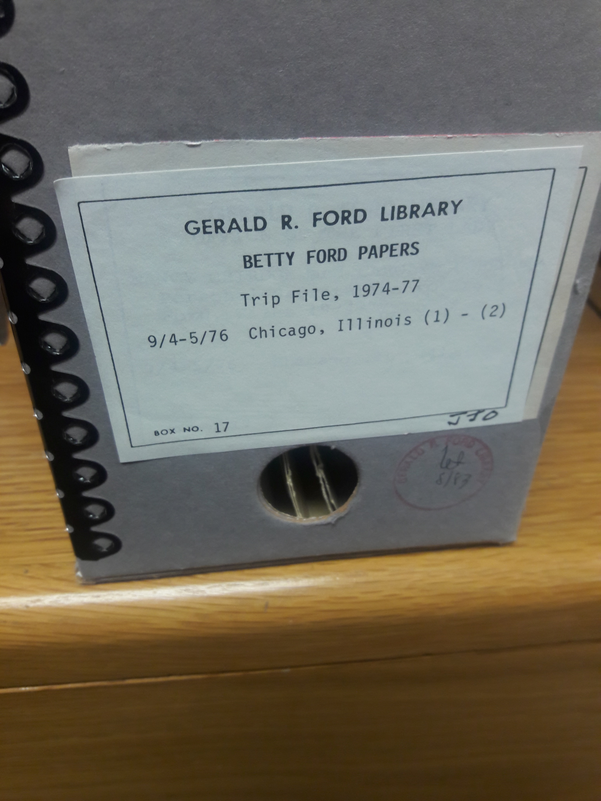
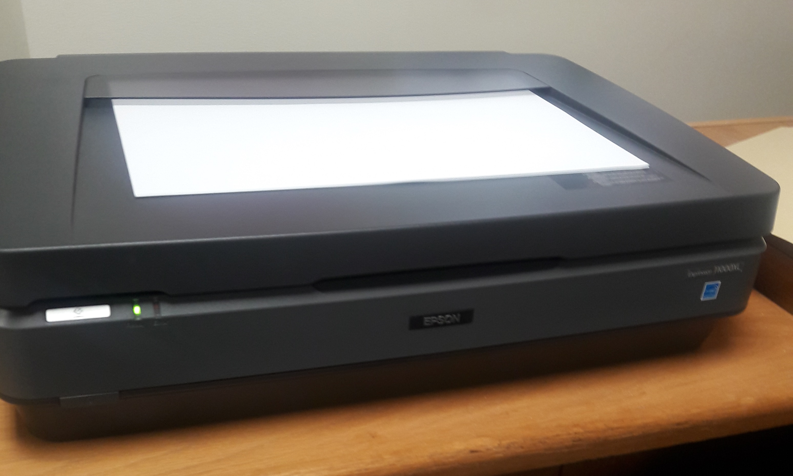

Internship

During Summer 2018, I interned at the Gerald R. Ford Presidential Library. The Ford Library is part of the National Archives, and is located on the University of Michigan’s North Campus. During my internship, I focused on textual digitization, specifically on digitizing a selection from Betty Ford’s papers. These include documents from Betty Ford’s trips, state dinners and the general subject files. The purpose of this project was to allow researchers greater access to the collection, without having to travel to the Ford Library. This project allowed me to gain experience in digitization and to develop a greater familiarity with the technical standards and digitization workflows being used by the Ford Library.
 